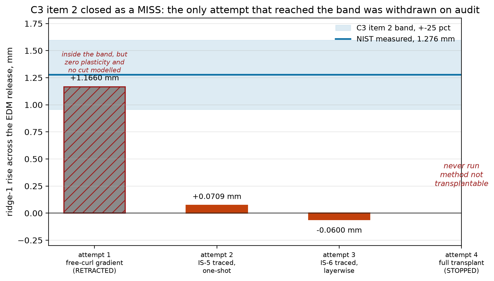
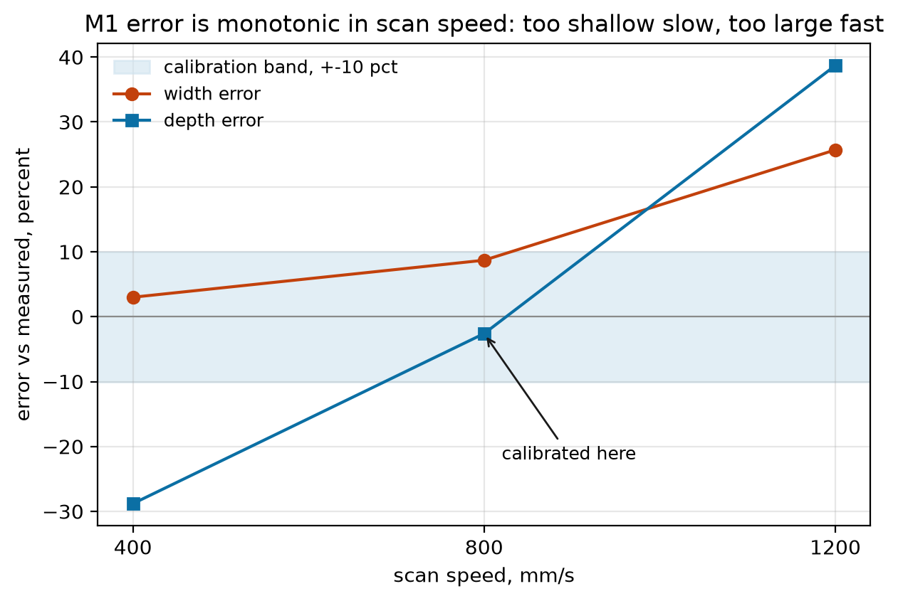
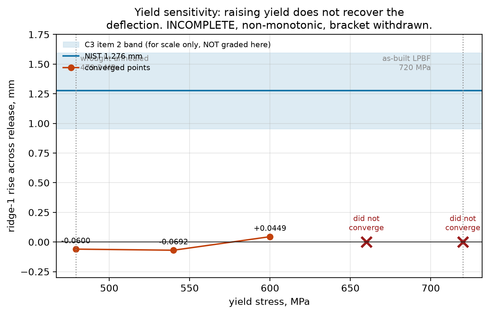
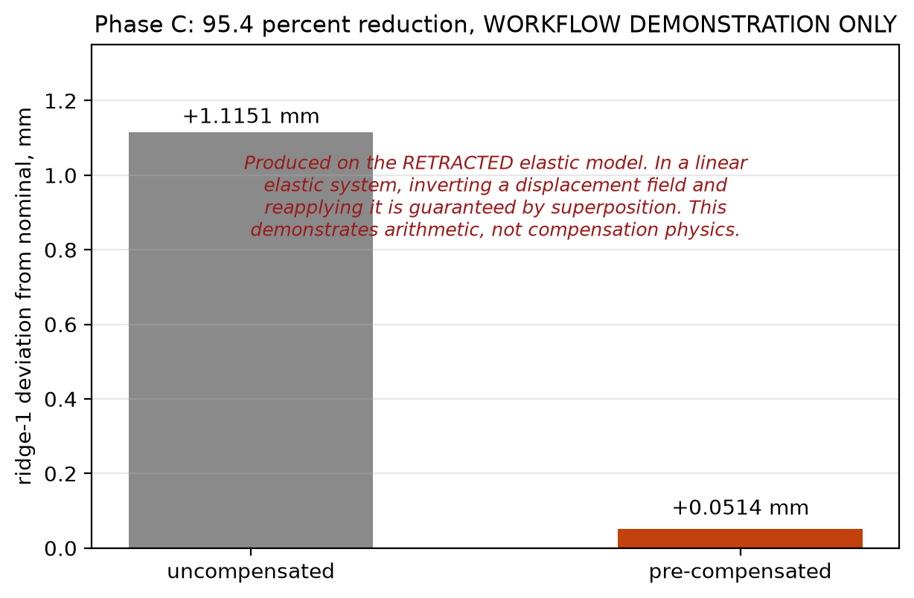
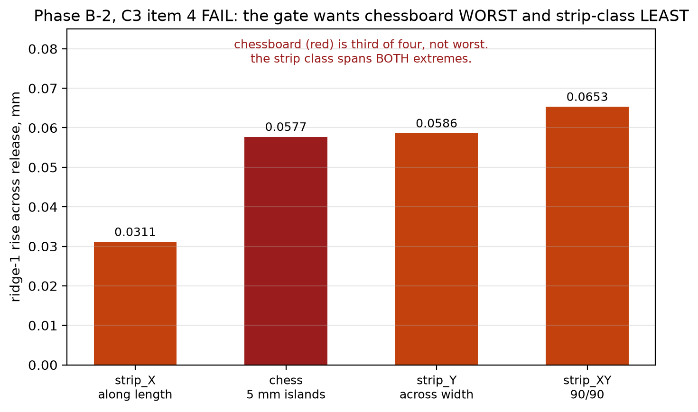

Metal L-PBF: Melt-Pool Calibration and Residual-Stress Modelling
- Solver
- Abaqus/Standard + Fortran DFLUX
- Checked against
- NIST AM Bench 2018, IN625
- Headline
- η = 0.66absorptivity, calibrated melt pool
- Status
- Part-scale misses documented with mechanisms

Problem
Laser powder bed fusion leaves a metal part in residual tension: cut it free of the build plate and it springs. This project is the research continuation of my published work on thermo-mechanical modelling of additive manufacturing, moving from a layered polymer composite to metal powder bed fusion in IN625, using a custom Fortran DFLUX user subroutine for the moving heat source. NIST's AM Bench 2018 published the machine settings, the geometry, and the measured spring of an IN625 bridge specimen, 1.276 mm upward at one ridge after a partial wire-EDM release cut, which this project used as a pre-declared target: a 4-core Abaqus model, with nothing tuned against that number, inside a plus or minus 25 percent band declared before any solve ran.
Method
Work proceeded in two scales, deliberately not tuned against each other. At melt-pool scale, a single-track thermal model was calibrated against one NIST measurement (195 W, 800 mm/s) by adjusting laser absorptivity, then frozen and tested against two untouched holdout conditions at different power and speed. At part scale, the full bridge geometry was voxelized from the published NIST STL to within 0.04 percent of its exact volume, a lumped-layer thermal history was built and audited for numerical artefacts, and four separate attempts were made to carry that thermal history into a mechanical model predicting the measured spring-back.
Validation
The melt-pool model passes at its calibration point (predicted solidus width and depth within a few percent of measured) but misses both untouched holdouts, and the misses are monotonic in scan speed: too shallow at low speed, too wide and deep at high speed. A counterfactual check confirmed the misses are structural, not a mis-set absorptivity: rescuing one holdout would require an absorptivity above unity, which is not physical. At part scale, the first deflection attempt landed inside the declared band and was reported as a pass, then retracted on internal audit after three independent problems were found by reading the model's own output: zero plastic yielding anywhere in the part (physically implausible for a process this far from equilibrium), an inert release-cut step that removed no material and produced identical results with or without it, and a boundary condition that had been selected after the answer was already known. Two further attempts using a traced inherent-strain method, not invented, both missed by a wide margin, and the mechanism was identified: the traced eigenstrain is roughly five times the yield strain of the material card used, so the model's own plasticity absorbs the strain that should have been stored and released as spring-back. A fourth attempt, transplanting a published method in full, was stopped at the reading stage because that method's own constitutive core and validation-coupon dimensions are not published, so it could not be reproduced honestly rather than guessed at.
Headline results
| Result | Value | Verdict |
|---|---|---|
| Melt pool, calibration case | within a few % | pass, single point |
| Melt pool, two holdout cases | up to +38.7% | miss, mechanism identified |
| Deflection, attempt 1 (retracted) | +1.12 to +1.17 mm | inside band, withdrawn on audit |
| Deflection, attempts 2 and 3, traced eigenstrain | +0.071 / −0.060 mm | miss, mechanism identified |
| Scan-strategy ranking, published method | - | fail, does not reproduce published order |
The substantive contribution of this study is not a validated part-scale prediction, which it does not have. It is a melt-pool calibration that holds at exactly the point it was calibrated at and nowhere else tested, plus three specific negative results, each with an identified physical mechanism and a citation, in a field where negative results are rarely written up with this much care.
Results gallery



Figures


Limitations
- No part-scale deflection prediction in this project falls inside the pre-declared band under an internally consistent, defensible model. The one that did was retracted on audit.
- The melt-pool model is a single-point calibration, not a validated process window; it should not be extrapolated to power-speed combinations away from its calibration point without re-checking.
- The scan-strategy ranking uses the industry-standard path-aware anisotropic inherent-strain method and does not reproduce the published ranking; this is reported as a documented miss with a proposed mechanism, not resolved.
- A full transplant of a published high-fidelity method was not attempted because that method's constitutive model and validation geometry are not published in enough detail to reproduce honestly.